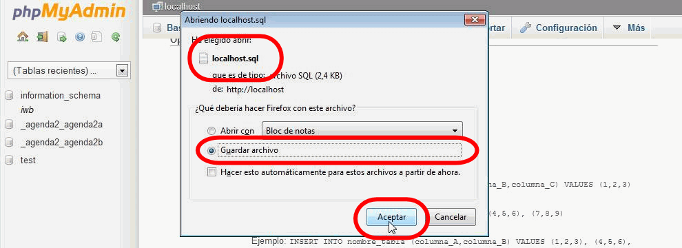

En esta lección se proponen soluciones detalladas de los ejercicios (3) de phpMyAdmin. Se recomienda intentar realizarlos primero sin recurrir a estas soluciones.
Estas soluciones están pendientes de actualizar a los ejercicios propuestos en el curso 2015/16.
phpMyAdmin (3) 1 - Completar instalación
Se trata de eliminar los avisos que muestran phpMyAdmin.
phpMyAdmin (3) 2 - Instalar tema
El tema aplicado a phpMyAdmin se modifica en la página principal (apartado Configuraciones de apariencia > Tema > Estilo).
La lista desplegable Tema muestra los temas disponibles. Al elegir uno de ellos, se aplicará inmediatamente:
Los temas adicionales se deberían descargar en principio desde la página web https://www.phpmyadmin.net/themes/, en la que conviene elegir la versión de phpMyAdmin para ver únicamente los temas apropiados para la versión instalada.
Los temas se distribuyen en forma de archivo comprimido. Descomprima el archivo descargado en la carpeta phpmyadmin/themes, en la que ya se encuentran los temas original y pmahomme. Al descomprimirlo se añadirá una carpeta con el nombre del tema (en este caso, cleanstrap).
Nota: En diciembre de 2014 la página de descarga de tema de phpMyAdmin no funcionaba correctamente. El 26/11/14 abrí una
pregunta en StackOverflow (http://stackoverflow.com/questions/27145138/does-the-phpmyadmin-themes-page-work-properly), ya que parecía que el soporte de phpMyAdmin se hace en StackOverflow, pero me la cerraron En abril de 2015 ya parece funcionar.
Para ver el nuevo tema en la lista desplegable, actualice la página principal de phpMyAdmin.
phpMyAdmin (3) 3 - Permitir borrar bases de datos a los usuarios
en el archivo config.inc.php, la opción "Bases de datos" ya no permite borrar bases de datos:
phpMyAdmin (3) 4 - Realizar copias de seguridad de las bases de datos del usuario iaw_agenda_2
CAPTURAS PENDIENTES DE ACTUALIZAR
Entrar en phpMyAdmin como el usuario iaw_agenda_2.
Elegir la opción "Exportar", elegir el método de exportación personalizado para poder marcar la casilla "Agregar sentencia CREATE DATABASE / USE", elegir únicamente las dos bases de datos de las aplicaciones y hacer clic en "Continuar":
phpMyAdmin generará la copia de seguridad en forma de archivo .sql que el navegador permitirá abrir o descargar

A continuación, borrar las bases de datos:
Restaurar las bases de datos importando la copia de seguridad:
phpMyAdmin (3) 5 (optativo) - Generar PDFs de la estructura de las bases de datos